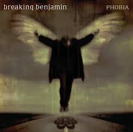
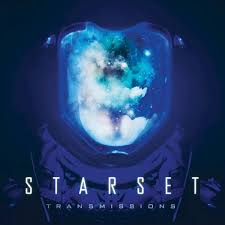

Музыка и ее роль в нашей жизни
Музыка занимает в жизни человека особое место — она сопровождает нас с детства и остаётся рядом в самые разные моменты. Через мелодии и ритмы человек может выражать то, что порой трудно передать словами: радость, тревогу, вдохновение, тоску. Музыка помогает глубже понимать собственные чувства и делать их яснее. Кроме эмоционального влияния, музыка играет важную роль в формировании личности. Она развивает вкус, расширяет кругозор, учит вниманию и умению слушать. Часто именно музыка помогает человеку находить единомышленников, становится основой дружбы или творческого пути. Наконец, музыка способна поддержать и исцелить. Она снижает стресс, помогает сосредоточиться, придаёт силы в тяжёлые периоды. Иногда всего одна мелодия может вернуть человеку спокойствие или вдохновение. Таким образом, музыка — это не просто искусство. Это язык, который понятен каждому, источник эмоциональной силы и один из важнейших способов почувствовать связь с окружающим миром и самим собой.
Мои музыкальные предпочтения
Музыка для меня — это не просто фон, а настоящий саундтрек жизни. Мои музыкальные вкусы сформировались под влиянием разных жанров и исполнителей, но особенно я цену альтернативный рок и русский рэп-рок. В моей музыкальной коллекции особое место занимают такие группы как Starset, Limp Bizkit и Breaking Benjamin. Starset привлекает меня своей космической атмосферой и глубокими текстами, как в композиции "My Demons". Их музыка сочетает мощные гитарные риффы с электронными элементами, создавая уникальное звучание. Limp Bizkit — это настоящий энергетический заряд, их треки вроде "Break Stuff" и "Lonely World" идеально подходят, когда нужно выплеснуть эмоции. Breaking Benjamin же поражает своей мелодичностью и эмоциональной глубиной, что особенно чувствуется в "The Diary Of Jane". Особое место в моих предпочтениях занимает российский исполнитель Рома Смайл. Его творчество — это искренние тексты о жизни, взаимоотношениях и внутренних переживаниях. Песни "Скалы", "Здесь и сейчас" и "Социокалека" resonate со мной потому, что в них я нахожу отражение собственных мыслей и чувств. Рома Смайл умеет говорить о сложном простыми словами, что делает его творчество особенно близким. Что объединяет всех этих исполнителей? Прежде всего — эмоциональная честность. Каждый из них говорит о важном: о борьбе с внутренними демонами, о поиске себя, о сложностях взаимодействия с миром. Их музыка становится для меня поддержкой в трудные моменты и дополнением в радостные. Музыка для меня — это способ лучше понять себя и окружающий мир. Через треки моих любимых исполнителей я проживаю разные эмоции, нахожу ответы на волнующие вопросы и просто получаю эстетическое удовольствие. Возможно, со временем мои вкусы изменятся, но именно эта музыка помогла мне сформировать свой внутренний мир и научила не бояться собственных чувств.
Я гитарист-самоучка
Для меня гитара — это не просто инструмент, а верный друг, который всегда понимает без слов. Я гитарист-самоучка, и моя музыка рождается не из нотных тетрадей и консерваторских правил, а из глубины души. Всё началось пять лет назад, когда мой старший брат впервые подозвал меня к себе, протянул свою акустическую гитару и сказал: "Попробуй, это круче, чем кажется". Именно он подсадил меня на это увлечение, став моим первым и главным вдохновителем. Помню, как он терпеливо показывал первые аккорды Am, Dm, C — его пальцы ловко перебирали струны, а у меня получалась лишь какофония. Но в его глазах я видел такую уверенность и любовь к музыке, что не мог сдаться. Я не пошёл в музыкальную школу и не нанимал репетитора. Вместо этого мы с братом часами сидели в его комнате, слушали записи наших любимых групп — Ромы Смайла, Starset, Limp Bizkit — и пытались подобрать их песни на слух. Брат учил меня не только аккордам, но и чувствовать музыку: "Не просто зажимай струны, а проживай каждый звук", — говорил он. Первые месяцы получалось ужасно: пальцы кровоточили от струн, аккорды не строили, а ритм сбивался. Но благодаря поддержке брата я продолжал идти вперёд. Сейчас, спустя пять лет, я понимаю: быть самоучкой — это особый путь. Я не играю сложные классические произведения и не стремлюсь к техническому совершенству. Моя цель — выражать через гитару те чувства, которые сложно описать словами. Когда я играю "Скалы" Ромы Смайла, я вспоминаю моменты грусти и одиночества. Когда перебираю вступление к "The Diary Of Jane" — чувствую прилив энергии и силы. А мощные риффы Limp Bizkit помогают выплеснуть накопившиеся эмоции. Самое ценное, что дала мне гитара — это возможность говорить без слов. Я не выступаю на больших сценах и не собираю толпы поклонников. Моя сцена — это костёр в лесу с друзьями, тёплый вечер в семейном кругу или просто одинокий закат на балконе. Когда я играю, я не думаю о технике или сложности — я просто проживаю музыку. Иногда закрываю глаза и полностью погружаюсь в звучание, и тогда гитара становится продолжением моих рук, а мелодия — отражением души. Я благодарен брату за то, что он когда-то вручил мне этот инструмент и открыл дверь в мир музыки. И хотя я остаюсь самоучкой, я знаю — именно такой путь, путь от сердца к сердцу, был моим настоящим призванием. Гитара научила меня главному: иногда самые искренние мелодии рождаются не из правил, а из желания делиться своей душой с миром.
Интересный факт обо мне
Я учился в музыкальной школе по классу баяна — инструмента, который для многих звучит необычно и даже немного экзотично. Однако именно баян стал для меня особенно близким: он открыл мир музыки с совершенно другой стороны, научил чувствовать мелодию, работать над собой и понимать, как рождается гармония. Эти занятия сформировали во мне настойчивость, творческое мышление и привычку доводить начатое до конца. И сегодня баян остаётся важной частью моего личного пути, напоминая о том, как важно развивать свои способности и не бояться выбирать нестандартный путь.
Мои любимые песни
Breaking Benjamin - The Diary Of Jane
Limp Bizkit - Break Stuff
Limp Bizkit - Lonely World
Roma Smile - Здесь и сейчас
Roma Smile - Скалы
Roma Smile - Социокалека
Starset - My Demons
Музыка — это язык души